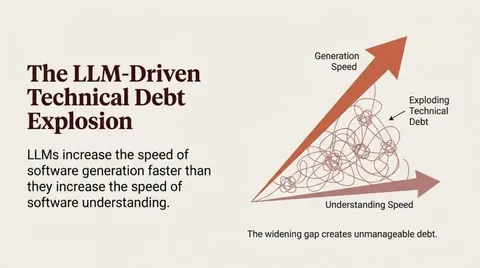

Gavin Mendel-Gleason used GPT-5.2 and Lean to verify a citation-streaming program
Gavin Mendel-Gleason reports that opencode, GPT-5.2 and lean-lsp-mcp produced a provably correct citation streaming program for a RAG answering system in two hours with no interventions. Gavin Mendel-Gleason argues that LLMs increase software generation faster than software understanding, and calls the approach vericoding (vibe-coding using programme verification).

Checked against: LinkedIn post